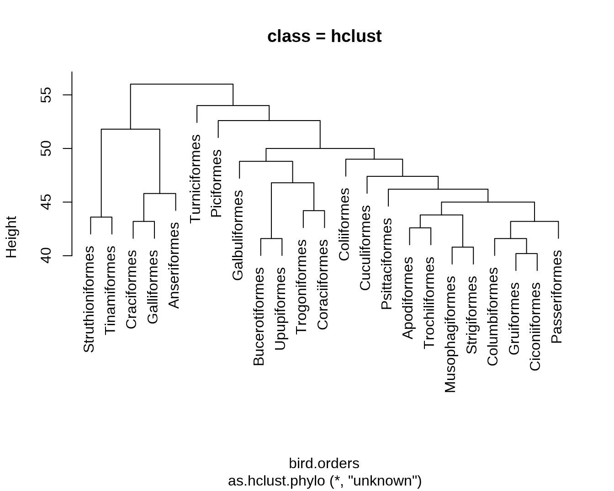
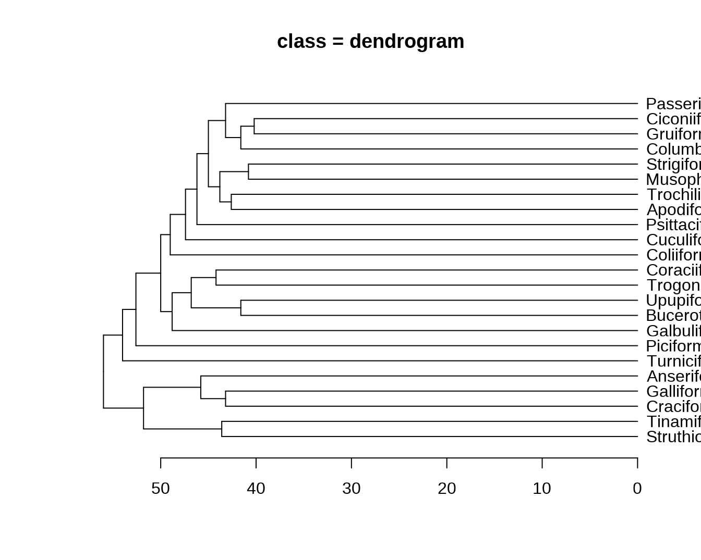
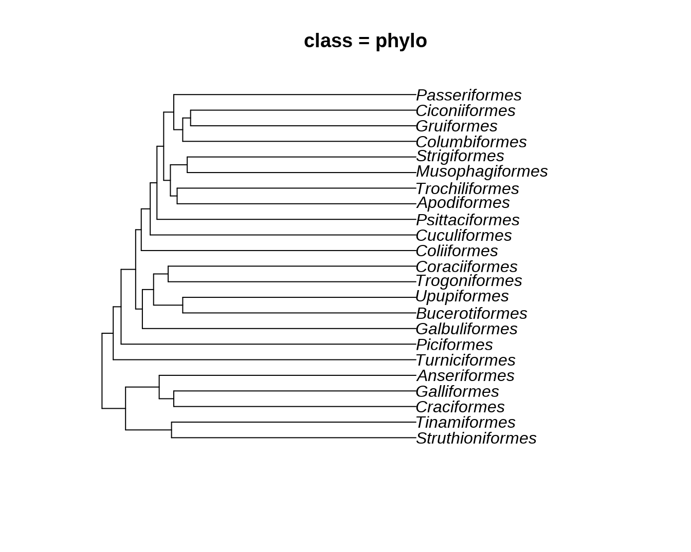
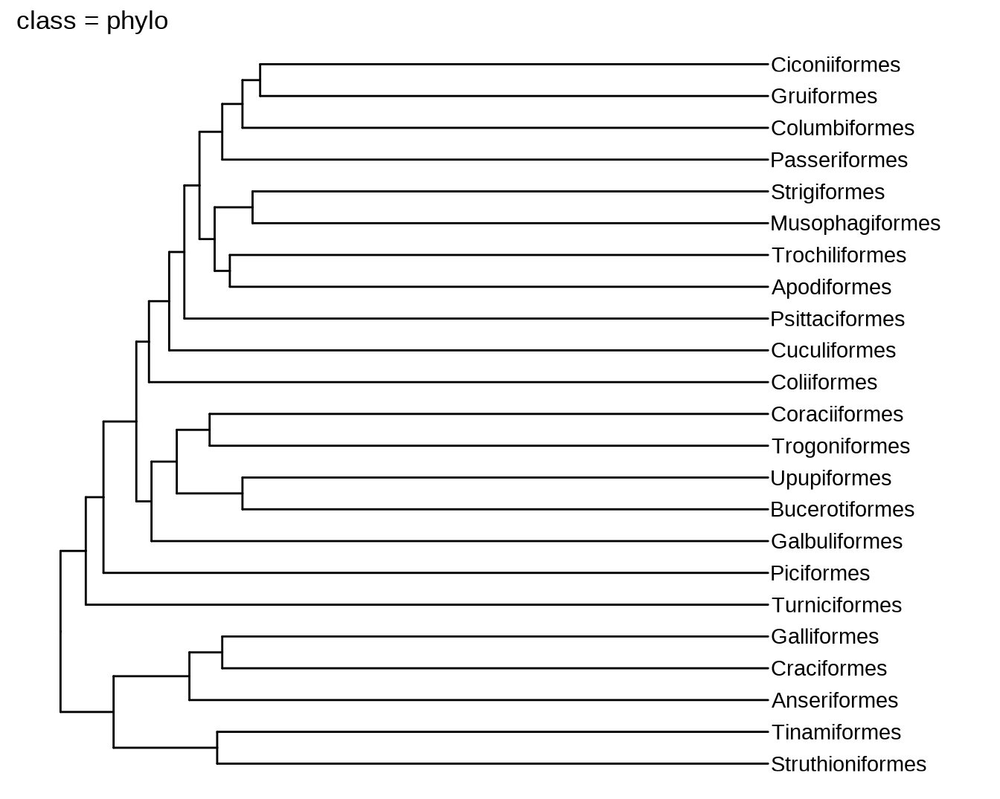
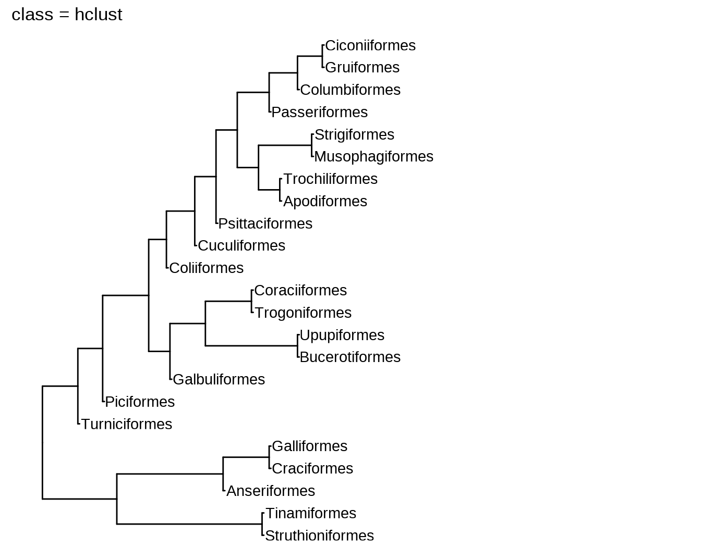
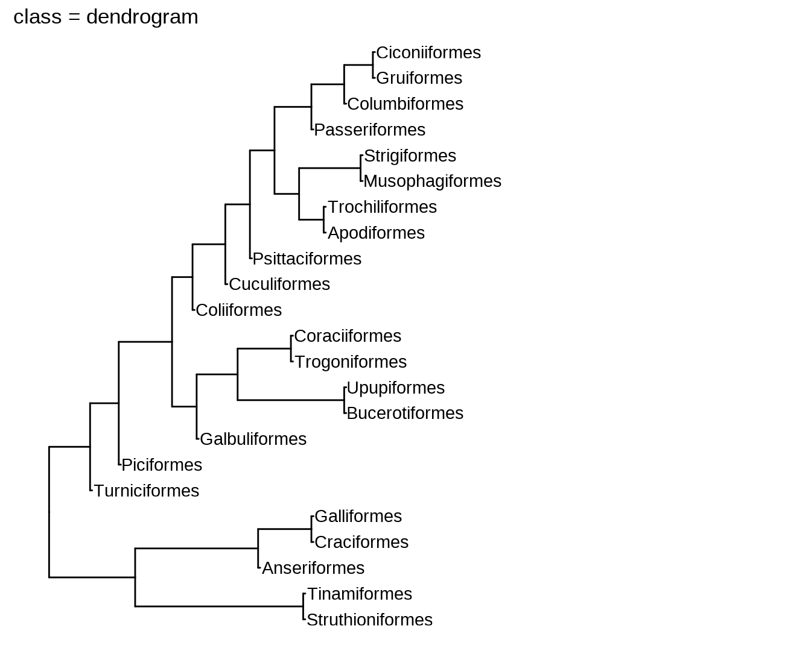
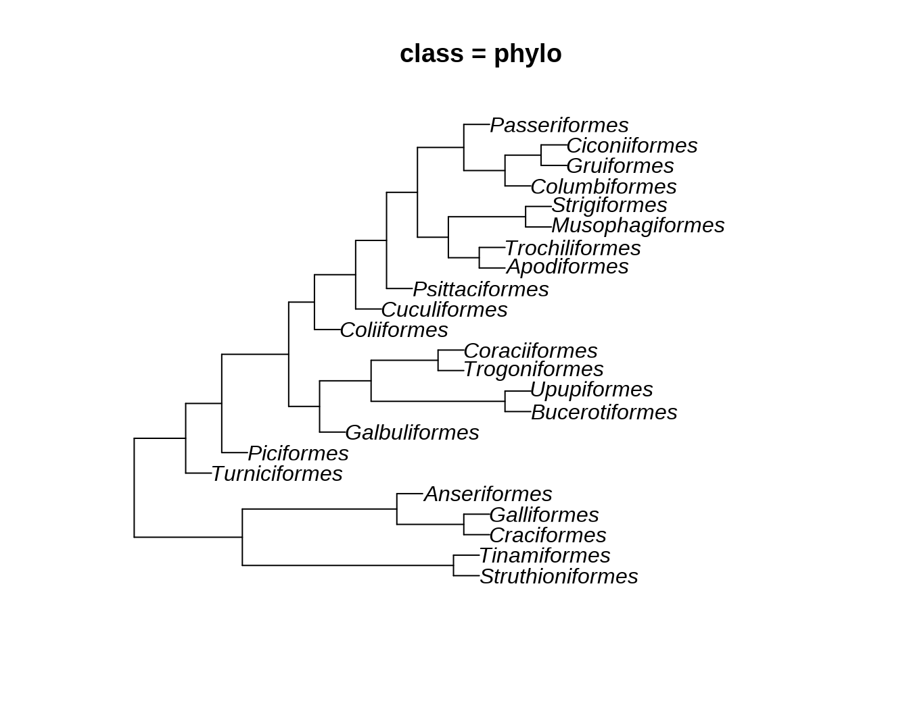
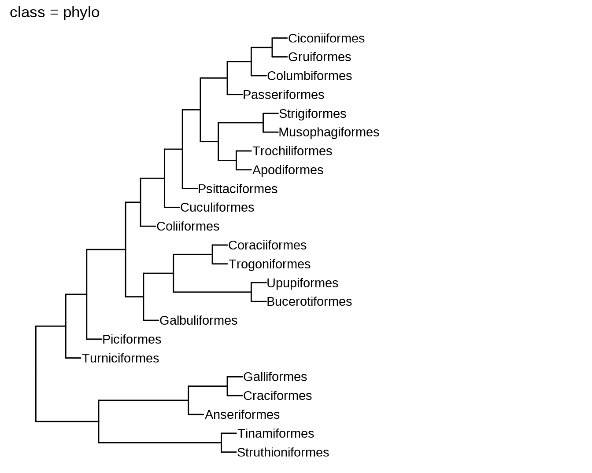
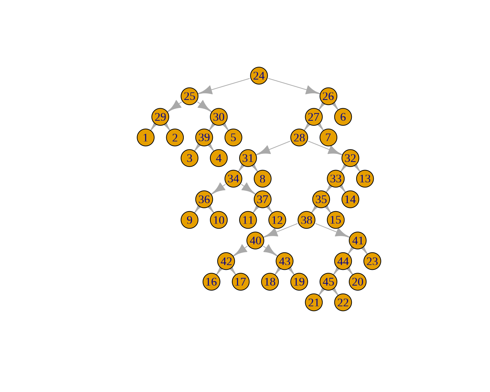

第 11 章 ggtree 代码解析
ggtree 可以处理进化树及聚类等一系列相关的信息。
library(ape)
data("bird.orders")
hc = as.hclust(bird.orders)
phylo = as.phylo.hclust(hc)
dend = as.dendrogram(hc)



library(ggplot2)
library(ggtree)
ggtree(bird.orders) + geom_tiplab() + xlim(NA, 35) + labs(title = paste0("class = ", class(bird.orders)))



11.1 新函数
phylo2 = ggtree:::as.phylo.hclust2(hc, hang = 1)
plot(phylo, main = paste0("class = ", class(phylo)))


11.2 数据结构
使用 str() 函数可以解析 R 语言中对象的结构。
R 语言中复杂对象都是一个 List，我们可以看到这两个 List 均包含 4 个数值以及 2 个属性。
str(phylo)## List of 4
## $ edge : int [1:44, 1:2] 24 25 29 29 25 30 39 39 30 24 ...
## $ edge.length: num [1:44] 2.1 4.1 21.8 21.8 3 ...
## $ tip.label : chr [1:23] "Struthioniformes" "Tinamiformes" "Craciformes" "Galliformes" ...
## $ Nnode : int 22
## - attr(*, "class")= chr "phylo"
## - attr(*, "order")= chr "cladewise"
str(phylo2)## List of 4
## $ edge : int [1:44, 1:2] 24 25 29 29 25 30 39 39 30 24 ...
## $ edge.length: num [1:44] 4.2 8.2 1 1 6 ...
## $ tip.label : chr [1:23] "Struthioniformes" "Tinamiformes" "Craciformes" "Galliformes" ...
## $ Nnode : int 22
## - attr(*, "class")= chr "phylo"
## - attr(*, "order")= chr "cladewise"不妨比较一下 List 中各个变量的数值是否相同。
slots = names(phylo)
for (i in seq_along(slots)){
slot = slots[[i]]
comparison = identical(phylo[[slot]], phylo2[[slot]])
print(paste0(slot, ": ", comparison))
}## [1] "edge: TRUE"
## [1] "edge.length: FALSE"
## [1] "tip.label: TRUE"
## [1] "Nnode: TRUE"由此可见，只有对象中的 edge.length 的数值不同。其它的数值（包括属性）都是一样的。
这里需要实现了解一下 edge 这个变量的含义。它是一个 22 × 2 的矩阵，数值均为整数。这个整数实际上是树上节点的编号。树状结构的节点有两类，一类是末端节点，另一类是相连的节点。第一类节点即是树的 tip，第二类节点是树的 internal nodes。
phylo##
## Phylogenetic tree with 23 tips and 22 internal nodes.
##
## Tip labels:
## Struthioniformes, Tinamiformes, Craciformes, Galliformes, Anseriformes, Turniciformes, ...
##
## Rooted; includes branch lengths.该树状结构总共有 23 个 tip 和 22 个 internal nodes。
进化树的本质也是图，把这些节点都视为图上的 node 的话，则每一行即定义了一个图上的边。
library(igraph)
g = graph_from_data_frame(phylo$edge)
plot(g, layout = layout_as_tree)
这个图的拓扑结构与进化树是一样的。
了解这些信息，是我们进一步理解进化树对象的数据操作的前提。
11.3 源代码解析
从上面的结果来看，as.phylo.hclust2() 做的事情就是修改了对象中 edge.length 的值。接下来我们看它是如何修改这个值的。
as.phylo.hclust() 的源代码如下：
as.phylo.hclust = function (x, ...){
N <- dim(x$merge)[1]
edge <- matrix(0L, 2 * N, 2)
edge.length <- numeric(2 * N)
node <- integer(N)
node[N] <- N + 2L
cur.nod <- N + 3L
j <- 1L
for (i in N:1) {
edge[j:(j + 1), 1] <- node[i]
for (l in 1:2) {
k <- j + l - 1L
y <- x$merge[i, l]
if (y > 0) {
edge[k, 2] <- node[y] <- cur.nod
cur.nod <- cur.nod + 1L
edge.length[k] <- x$height[i] - x$height[y]
}
else {
edge[k, 2] <- -y
edge.length[k] <- x$height[i]
}
}
j <- j + 2L
}
if (is.null(x$labels))
x$labels <- as.character(1:(N + 1))
obj <- list(edge = edge, edge.length = edge.length/2, tip.label = x$labels,
Nnode = N)
class(obj) <- "phylo"
reorder(obj)
}as.phylo.hclust2() 的源代码如下（这里首先列出了函数中使用的另一个小函数）：
edge2vec <- function(tr) {
parent <- tr$edge[,1]
child <- tr$edge[,2]
## use lookup table
pvec <- integer(max(tr$edge))
pvec[child] <- parent
return(pvec)
}
as.phylo.hclust2 = function(x, hang = 0.1, ...){
h = x
tr = ape::as.phylo(x)
ev = edge2vec(tr)
nodes <- integer(length(h$height))
for (i in seq_along(nodes)) {
j <- h$merge[i,]
if (any(j < 0)) {
j2 <- j[j < 0][1]
nodes[i] <- ev[abs(j2)]
} else {
nodes[i] <- ev[nodes[j[1]]]
}
}
len <- numeric(max(tr$edge))
len[nodes] <- h$height
pn <- ev[nodes]
pn[pn == 0] <- treeio::rootnode(tr)
len[nodes] <- len[pn] - len[nodes]
len[1:Ntip(tr)] <- hang #max(h$height)/10
tr$edge.length <- len[tr$edge[,2]]
return(tr)
}11.4 其它相关对象的数据结构
phylo 前面已经介绍过，在此不再赘述。
str(bird.orders)## List of 4
## $ edge : int [1:44, 1:2] 24 25 26 26 25 27 28 28 27 24 ...
## $ Nnode : int 22
## $ tip.label : chr [1:23] "Struthioniformes" "Tinamiformes" "Craciformes" "Galliformes" ...
## $ edge.length: num [1:44] 2.1 4.1 21.8 21.8 3 1.3 21.6 21.6 22.9 1 ...
## - attr(*, "class")= chr "phylo"hclust 对象是一个含有 6 个变量的 List。
str(hc)## List of 6
## $ merge : int [1:22, 1:2] -21 -18 -20 -9 -16 3 -3 -1 5 -11 ...
## $ height: num [1:22] 40.2 40.8 41.6 41.6 42.6 43.2 43.2 43.6 43.8 44.2 ...
## $ order : int [1:23] 1 2 3 4 5 6 7 8 9 10 ...
## $ labels: chr [1:23] "Struthioniformes" "Tinamiformes" "Craciformes" "Galliformes" ...
## $ call : language as.hclust.phylo(x = bird.orders)
## $ method: chr "unknown"
## - attr(*, "class")= chr "hclust"dend 对象是一个多层嵌套的 dendrogram 对象（像俄罗斯套娃）。
str(dend)## --[dendrogram w/ 2 branches and 23 members at h = 56]
## |--[dendrogram w/ 2 branches and 5 members at h = 51.8]
## | |--[dendrogram w/ 2 branches and 2 members at h = 43.6]
## | | |--leaf "Struthioniformes"
## | | `--leaf "Tinamiformes"
## | `--[dendrogram w/ 2 branches and 3 members at h = 45.8]
## | |--[dendrogram w/ 2 branches and 2 members at h = 43.2]
## | | |--leaf "Craciformes"
## | | `--leaf "Galliformes"
## | `--leaf "Anseriformes"
## `--[dendrogram w/ 2 branches and 18 members at h = 54]
## |--leaf "Turniciformes"
## `--[dendrogram w/ 2 branches and 17 members at h = 52.6]
## |--leaf "Piciformes"
## `--[dendrogram w/ 2 branches and 16 members at h = 50]
## |--[dendrogram w/ 2 branches and 5 members at h = 48.8]
## | |--leaf "Galbuliformes"
## | `--[dendrogram w/ 2 branches and 4 members at h = 46.8]
## | |--[dendrogram w/ 2 branches and 2 members at h = 41.6]
## | | |--leaf "Bucerotiformes"
## | | `--leaf "Upupiformes"
## | `--[dendrogram w/ 2 branches and 2 members at h = 44.2]
## | |--leaf "Trogoniformes"
## | `--leaf "Coraciiformes"
## `--[dendrogram w/ 2 branches and 11 members at h = 49]
## |--leaf "Coliiformes"
## `--[dendrogram w/ 2 branches and 10 members at h = 47.4]
## |--leaf "Cuculiformes"
## `--[dendrogram w/ 2 branches and 9 members at h = 46.2]
## |--leaf "Psittaciformes"
## `--[dendrogram w/ 2 branches and 8 members at h = 45]
## |--[dendrogram w/ 2 branches and 4 members at h = 43.8]
## | |--[dendrogram w/ 2 branches and 2 members at h = 42.6]
## | | |--leaf "Apodiformes"
## | | `--leaf "Trochiliformes"
## | `--[dendrogram w/ 2 branches and 2 members at h = 40.8]
## | |--leaf "Musophagiformes"
## | `--leaf "Strigiformes"
## `--[dendrogram w/ 2 branches and 4 members at h = 43.2]
## |--[dendrogram w/ 2 branches and 3 members at h = 41.6]
## | |--leaf "Columbiformes"
## | `--[dendrogram w/ 2 branches and 2 members at h = 40.2]
## | |--leaf "Gruiformes"
## | `--leaf "Ciconiiformes"
## `--leaf "Passeriformes"